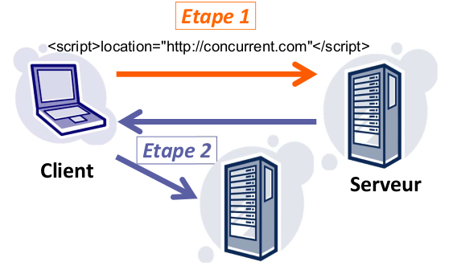
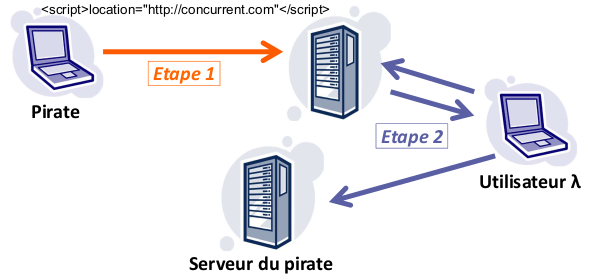
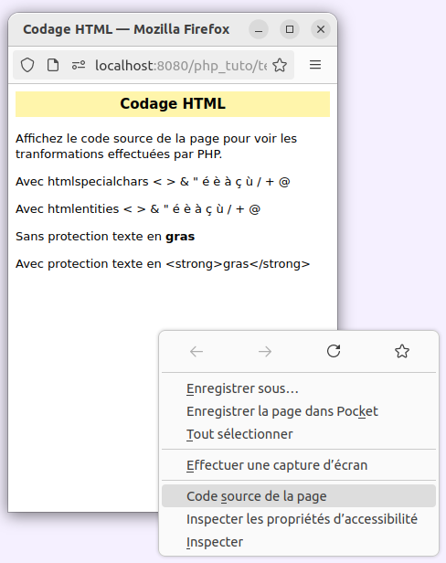

Dans un script PHP, plusieurs autres langages, ou environnements, sont manipulés. En effet, nous sommes amenés à gérer des chaînes destinées au client (i.e. navigateur), ou au serveur de bases de données :
Notez également que le code HTML envoyé au navigateur contient bien souvent des URL permettant de désigner des ressources sur le réseau. Quand il s'agit de scripts, il est possible de leur envoyer des paramètres.
Tous ces langages, ou environnements, disposent de caractères spéciaux, i.e. qui ont une signification spéciale dans le langage considéré. Exemples :
Traitements, ou protections, à réaliser sur les chaînes provenant d'une saisie utilisateur (i.e. visiteur du site) :
PHP dispose de fonctions spécialisées permettant de réaliser ces traitements.
Définition : une attaque XSS (cross site scripting) consiste à envoyer au navigateur une chaîne contenant un code HTML ou JavaScript malveillant provenant d'une saisie du visiteur actuel, ou d'un autre visiteur.
Par exemple, imaginons que votre site autorise les utilisateurs (i.e. visiteurs) à saisir des commentaires. Un utilisateur pourrait saisir des tags HTML dans un de ses commentaires, par exemple un tag <script> contenant du code JavaScript. Si ce commentaire (i.e. la chaîne qui le représente) est ensuite envoyée sans précautions au navigateur, ce dernier interprétera le code HTML et donc le code JavaScript contenu dans l'élément <script>. Exemple :
Quand le navigateur appelle ce script, il est redirigé vers le site de l'université de Franche-Comté. Suite à la réception de la page contenant le commentaire piégé, le navigateur demande la page d'accueil du site https://www.femto-st.fr.
L'"attaque" XSS ci-dessus n'est bien entendu qu'un amusement par rapport à ce qu'il est possible de faire. Il est par exemple possible de rediriger l'utilisateur vers une page qui imite la page de connexion du site dans le but de lui voler ses identifiants. Il ne faut pas croire que seul JavaScript est capable de faire des dégâts. Un simple lien HTML (<a>) peut se révéler aussi dangereux car le click peut nous emmener autre part que ce qui est indiqué. Un tag <img> peut aussi pointer non sur une image, mais sur un script PHP qui pourra par exemple obtenir des informations sur les cookies de session avant de renvoyer (ou pas) une image.
Il existe 2 types d'attaques XSS :

Dans le cas d'une attaque XSS réfléchie (non permanente), les étapes sont les suivantes :
Vous allez me dire que l'utilisateur ne va pas se piéger tout seul... Eh bien détrompez-vous : avec des techniques d'ingénierie sociale, certains pirates arrivent à faire faire pas mal de choses aux autres.

Dans le cas d'une attaque XSS stockée (permanente), les étapes sont les suivantes :
Pour obtenir des informations complémentaires sur les attaques XSS : Cross-Site Scripting (XSS)
Afin d'annihiler toute tentative d'attaque XSS, quand vous envoyez, au navigateur, une chaîne provenant d'une saisie utilisateur ou de la base de données, pour que le navigateur en fasse l'affichage, il faut préalablement encoder les caractères spéciaux du langage HTML (<, >, &, ...) pour les neutraliser, afin qu'ils ne soient pas interprétés comme éléments du langage HTML, mais traités comme de simples éléments de texte.
Les fonctions htmlspecialchars() et htmlentities() permettent de neutraliser les caractères spéciaux du langage HTML.
htmlspecialchars() convertit en entités HTML les caractères qui ont une signification spéciale en HTML (&, <, >). De plus, htmlspecialchars() convertit ou non les quotes (", ') en entités HTML suivant le second paramètre qui lui est transmis.
htmlentities() est identique à la fonction htmlspecialchars(), sauf que tous les caractères qui ont des équivalents en entités HTML sont traduits en entités HTML, notamment les caractères accentués.
Visualisez le code source de la page HTML générée par le script précédent en effectuant un clic droit sur la page, puis en sélectionnant Code source de la page.

Si on protège la chaîne piégée avec htmlentities(), l'attaque XSS est annihilée.
La fonction strip_tags() permet d'enlever les tags HTML contenus dans une chaîne qu'on lui transmet en paramètre. Elle permet également de se protéger contre les attaques XSS :
Nous utiliserons la fonction strip_tags() pour vérifier que les chaînes saisies par l'utilisateur, via un formulaire, ne contiennent pas de tags HTML.
La fonction get_meta_tags() renvoie un tableau contenant les tags meta d'une page HTML. Cette fonction peut être utilisée par exemple pour indexer un site, ou donner des informations sur des pages HTML.
Soit la page HTML suivante (test_meta.html dans le dossier "test") :
<!DOCTYPE html> <html lang="fr"> <head> <title>Page de test</title> <meta name="keywords" content="test, php, fonction"> <meta name="description" content="Page de test de la fonction get_meta_tags"> <meta name="author" content="François Piat"> </head> <body> Page de test pour la récupération des meta-tags </body> </html>
La fonction get_meta_tags() renverra le tableau suivant :
La plupart des bases de données demandent que dans les données qui leurs sont envoyées, les guillemets doubles ou simples, et les backslashs soient protégés par un backslash.
Par exemple, pour mettre le texte C'est un texte "à problème" dans une requête SQL INSERT, nous formerons une chaine ressemblant à :
INSERT INTO latable (leChamp)
VALUES ('C\'est un texte \"à problème\"')
PHP fournit la fonction addslashes()
pour effectuer le travail à notre place.
Pour enlever les
backslashes de protection, nous pouvons utiliser la fonction stripslashes()
Nous verrons plus en détail dans le chapitre consacré à MySQL comment rendre ses protections plus efficaces, en particulier avec l'utilisation de la fonction dédiée mysqli_real_escape_string.